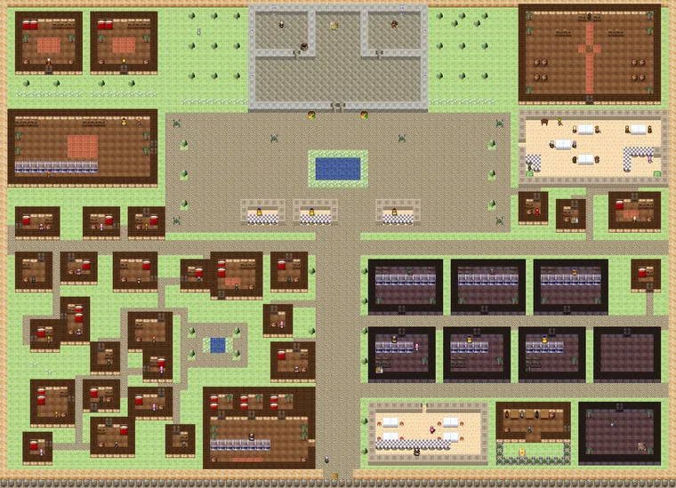
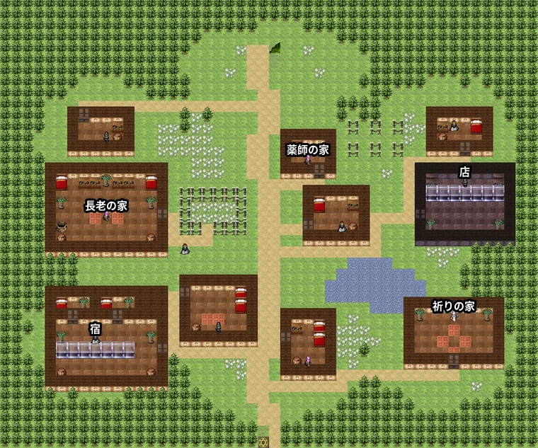
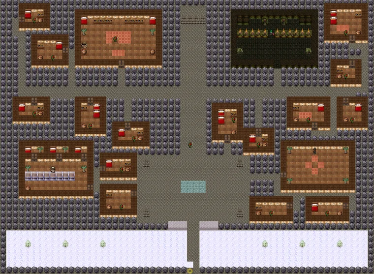
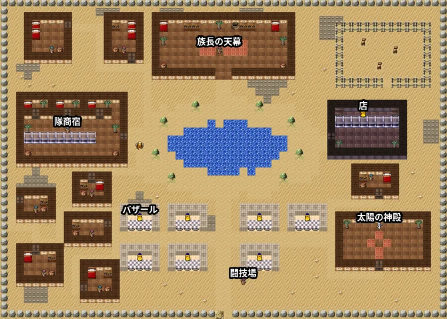
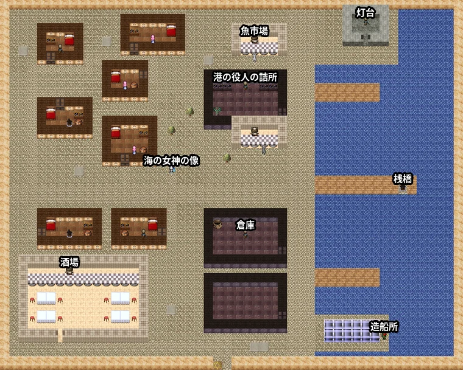

PHI の世界
剣と魔法の、王道のファンタジーの世界です。
四つの国を巡って人々の頼みを聞き、魔物を退け、やがて魔王に挑みます。
海に抱かれた大陸アルネスには、四つの国がある。
東の海の向こう、黒い島に魔王が目覚めてから、
国々の辺境には魔物の影が差すようになった。
旅人よ、まずは王都ヴェルマーの王を訪ねよ。
旅の始まりの国です。
城と大聖堂、冒険者ギルド、市場の並ぶ王都と、北の小さな村があります。

大森林の奥の、エルフの里です。
千年を生きるエルフは、古い戦の記憶を今も語り継いでいます。

雪の山の下に炉の火を守る、ドワーフの国です。
頑固な職人たちの町では、腕の良い鍛冶屋が待っています。

砂の海に浮かぶオアシスの国です。
隊商の行き交うバザールと、太陽の神殿があります。

東の海に面した港町です。灯台の下に、船乗りたちの暮らしがあります。

初めの一日は、倒れてもその場で起き上がれる加護があります。
迷ったら町の人に話し掛けてください。次に向かう先は、たいてい誰かが知っています。
この世界は、PHI のクライアント WPHI で遊ぶ事を前提に作っています。
大きな魔物の体、品の属性の色、この世界の為に描いたキャラの絵は、WPHI でだけ正しく見えます。
接続先は、公開の準備が整ったらこのページでお知らせします。